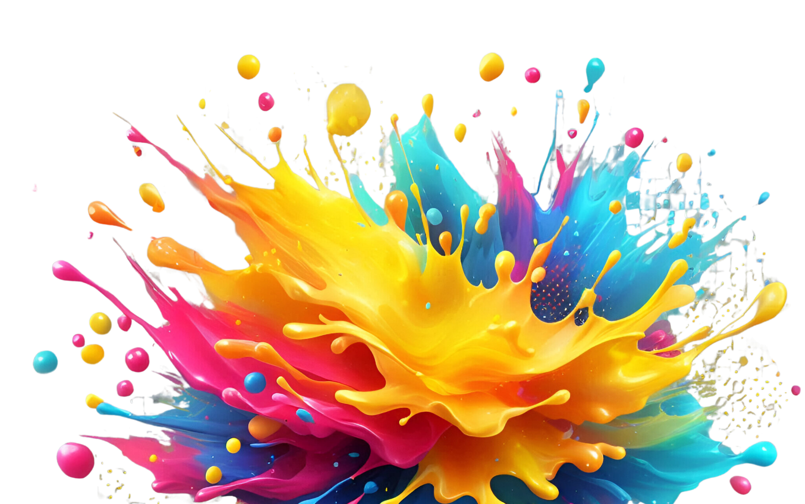
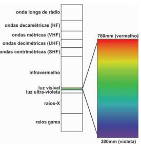
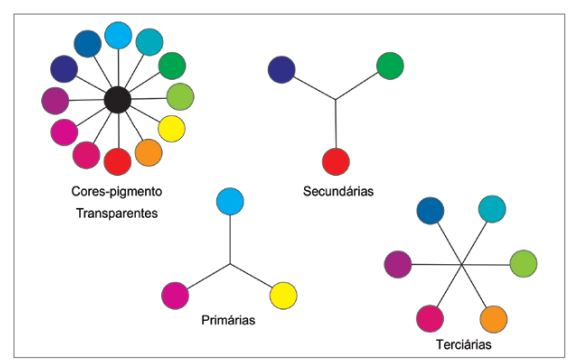
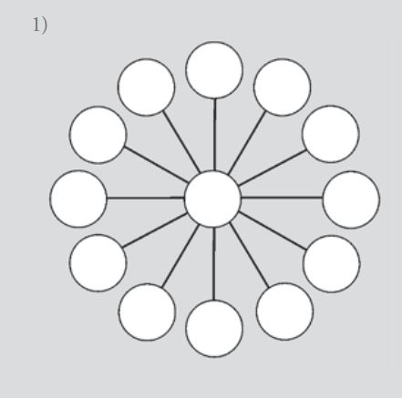
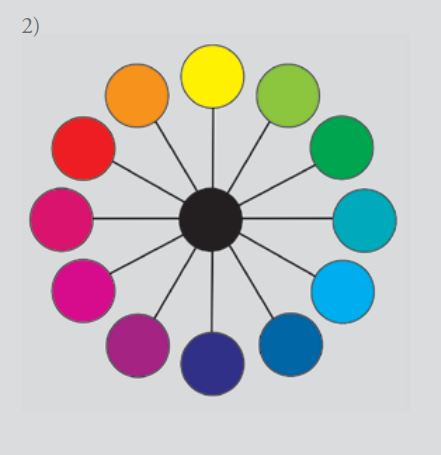

O QUE É
COR

Introdução
Fisicamente, a cor é definida como uma sensação produzida por certas organizações nervosas sob a ação da luz, isto é, ainda sem a interpretação humana. Ondas de luz alcançam os olhos através de uma transmissão (da fonte de luz para o objeto, e deste para o observador) ou quando o objeto é a própria fonte de luz, resultando na sensação cromática. Todos os corpos quentes emitem radiação eletromagnética. Consideram-se como quentes quaisquer corpos com a temperatura acima de –273 graus Celsius (zero absoluto). Apenas uma pequena parte desta radiação eletromagnética é visível, como mostra a Figura
Conceito
Os processos para o resultado de qualquer sensação cromática nesta tríade específica de cores-pigmento são dois: a mistura óptica das luzes refletidas por pequenos pontos colocados muito próximos uns dos outros, como utilizavam os impressionistas pontilhistas, e a mistura dessas mesmas luzes coloridas refletidas pelos pigmentos, colocados em discos rotativos. No caso das cores-pigmento primárias opacas (vermelho, amarelo e azul), o preto (que teoricamente é o resultado da mistura das três) só ocorreria se o amarelo absorvesse completamente as outras faixas coloridas da luz branca incidente e refletisse somente a soma do verde e do vermelho (G + R), e o mesmo acontecesse com o vermelho e com o azul.

Atividade

Atividade 01
CÍRCULO CROMÁTICO EM COR-PIGMENTO TRANSPARENTE.
Objetivo: construir um instrumento para se pensar os esquemas de combinações de cores possíveis, um Círculo Cromático. Será a partir das cores-pigmento transparentes, pois são as cores que se consegue em tinta.;

Atividade 02
CÍRCULO CROMÁTICO EM COR-PIGMENTO TRANSPARENTE.
Material: folha para guache, tintas guache nas cores magenta, ciano, amarelo e preto. Descrição: desenhar um círculo com doze cores, primárias, secundárias e terciárias em cores- -pigmento transparentes, dispostas segundo a teoria